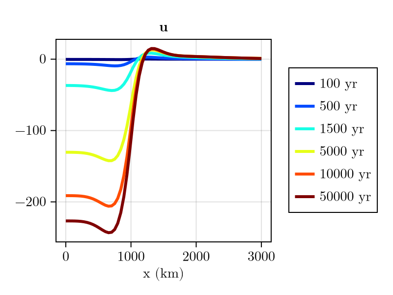
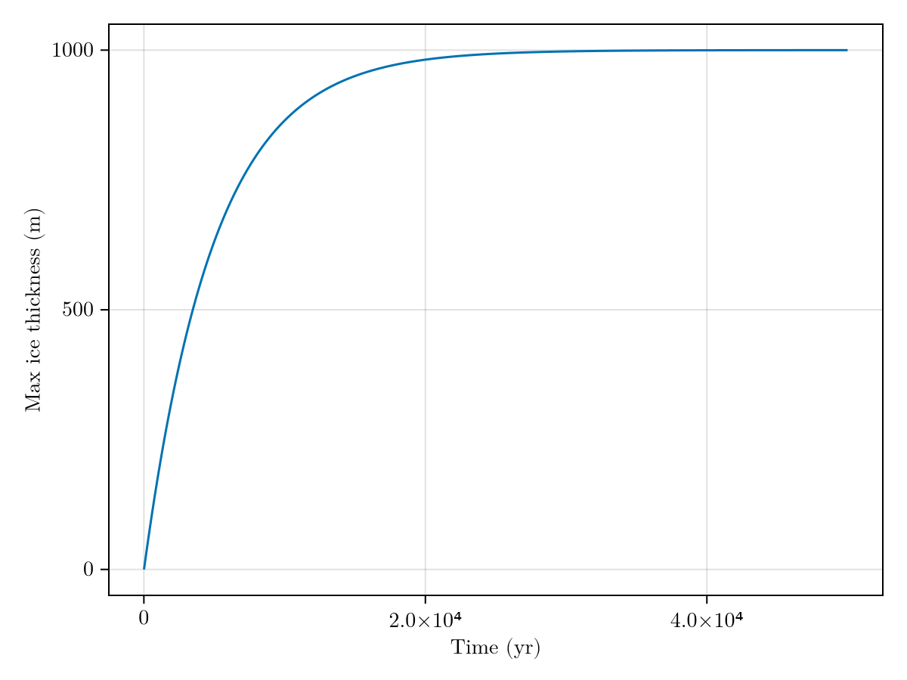

Coupling FastIsostasy
In the previous examples, we have seen how to use FastIsostasy to compute the viscous response of the Earth to a given load. In this example, we will see how to couple FastIsostasy with an externally defined load, which is a common use case when coupling FastIsostasy with an ice sheet model. First, let's define the usual structs, but without specifying the ice thickness in the boundary conditions, since we will update it manually in the time loop:
using FastIsostasy, CairoMakie
W, n = 3f6, 7 # square domain as in the first example
domain = RegionalDomain(W, n)
bcs = BoundaryConditions(domain) # H_ice updated within the time loop => not specified here
solidearth = SolidEarth(domain) # default => homogeneous
sealevel = RegionalSeaLevel() # default => inactive
nout = NativeOutput(vars = [:u], # only store viscous displacement.
t = [100, 500, 1500, 5000, 10_000, 50_000f0])
sim = Simulation(domain, bcs, sealevel, solidearth, (0, 50f3); nout = nout) Computation domain: RegionalDomain{Float32, Matrix{Float32}, Matrix{Float32}}
Physical constants: PhysicalConstants{Float32}
Problem BCs: BoundaryConditions{Float32, Matrix{Float32}, ExternallyUpdatedIceThickness}
Sea level: RegionalSeaLevel{LaterallyConstantSeaSurface, NoSealevelLoad, ConstantBSL{Float32, ReferenceBSL{Float32, TimeInterpolation0D{Float32}}}, InternalBSLUpdate, GoelzerVolumeContribution, NoAdjustmentContribution, GoelzerDensityContribution}
Solid Earth: SolidEarth{Float32, Matrix{Float32}, Matrix{Bool}, LaterallyVariableLithosphere, MaxwellMantle, NoCalibration, CompressibleMantle, FreqDomainViscosityLumping, IncompressibleLithosphereColumn}
Solver options: SolverOptions
GIATools: GIATools{ConvolutionPlanHelpers{Float32, Matrix{Float32}, Matrix{ComplexF32}, FFTW.rFFTWPlan{Float32, -1, false, 2, Tuple{Int64, Int64}}, AbstractFFTs.ScaledPlan{ComplexF32, FFTW.rFFTWPlan{ComplexF32, 1, false, 2, UnitRange{Int64}}, Float32}}, ConvolutionPlan{Matrix{Float32}, Matrix{ComplexF32}}, ConvolutionPlan{Matrix{Float32}, Matrix{ComplexF32}}, ConvolutionPlan{Matrix{Float32}, Matrix{ComplexF32}}, FastIsostasy.EmptyConvolution, FFTW.cFFTWPlan{ComplexF32, -1, true, 2, Tuple{Int64, Int64}}, AbstractFFTs.ScaledPlan{ComplexF32, FFTW.cFFTWPlan{ComplexF32, 1, true, 2, UnitRange{Int64}}, Float32}, FastIsostasy.PreAllocated{Float32, Matrix{Float32}, Matrix{ComplexF32}}}
Reference state: ReferenceState{Float32, Matrix{Float32}, Matrix{Bool}}
Current state: CurrentState{Float32, Matrix{Float32}, Matrix{Bool}}
Netcdf output: NetcdfOutput{Float32, PaddedOutputCrop}
Native output: NativeOutput{Float32}
native t_out: Float32[100.0, 500.0, 1500.0, 5000.0, 10000.0, 50000.0]
nc t_out: Float32[]
nx, ny: [128, 128]
dx, dy: Float32[46875.0, 46875.0]
Wx, Wy: Float32[3.0f6, 3.0f6]
extrema(effective viscosity): (1.17187504f21, 1.17187504f21)
extrema(lithospheric thickness): (88000.0f0, 88000.0f0)
Now comes the key difference: Instead of using run!, we will manually control the time integration by using init_integrator and step!:
integrator = init_integrator(sim)
tt = 0f0 # the time variable governing all models
Δt = 10f0 # time step for the coupling (unrelated to internal, adaptive time step)
τ = 5f3 # exponential time scale of the load increase
max_H_ice = Float32[] # will store max H_ice at each time step
H_ice_1 = 1f3 .* (domain.R .< 1f6) # cylinder load as in first example
while tt < 50f3
sim.now.H_ice .= H_ice_1 .* (1-exp(-tt / τ)) # change load, replace with your own model!
step!(integrator, Δt, true) # step until Δt
global tt += Δt # update time variable
push!(max_H_ice, maximum(sim.now.H_ice)) # store max H_ice for plotting
end
fig = plot_transect(sim, [:u])
This yields a similar viscous displacement field as in the first example, but with a smaller amplitude at the beginning due to the transient increase of the load until it reaches its maximum after about 10 kyr:
fig, ax, _ = lines(Δt:Δt:50f3, max_H_ice)
ax.xlabel = "Time (yr)"
ax.ylabel = "Max ice thickness (m)"
fig